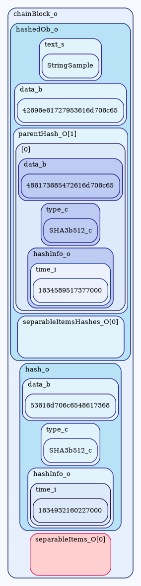

Separable Items
 In an ideal, rational world, there would be no need for separable items. No combination of bits on a computer is inherently dangerous, but... there are parts of the world governed by people who believe that some information should not be allowed to freely circulate in their jurisdiction. Since a central concept of the blockchain includes public dissemination of a consistent global public record, it is inevitable that persons innocent or malicious will*illegally, or even legally
record something on the blockchain which is illegal in some jurisdiction. Rather than attempt to fight local censorship laws or extend their reach globally, the Assign Onward blockchain incorporates the concept of "Separable Items" - items which are included in the blockchain by their hash, and thus can be separated (and censored) without impacting other portions of the blockchain's integrity checking.Without censorship considerations, the blockchain would be served in its entirety to all jurisdictions, but when certain information in the blockchain is objected to by certain jurisdictions, then servers outside those jurisdictions may provide a "scrubbed" blockchain which removes the offending data before sending blocks into the restrictive jursidictions. Note that transactional data, such as public keys, share amounts and signatures, are not separable items and hopefully should not run afoul of censorship concerns.
In the figure you can see how the separable items themselves are not included in the hashed data, but their hashes are. Not quite a Merkle tree
*without calculation of a nonce to worry about, the Merkle tree is sort of overkill in an Ⓐ protocol. A simple list of separable item blocks with their associated list of hashes should be efficient and flexible in this setting.
, but similar.
Assign Onward
3 June 2018
MIT License
Copyright (c) 2018 Assign Onward
Permission is hereby granted, free of charge, to any person obtaining a copy of this software and associated documentation files (the "Software"), to deal in the Software without restriction, including without limitation the rights to use, copy, modify, merge, publish, distribute, sublicense, and/or sell copies of the Software, and to permit persons to whom the Software is furnished to do so, subject to the following conditions:
The above copyright notice and this permission notice shall be included in all copies or substantial portions of the Software.
THE SOFTWARE IS PROVIDED "AS IS", WITHOUT WARRANTY OF ANY KIND, EXPRESS OR IMPLIED, INCLUDING BUT NOT LIMITED TO THE WARRANTIES OF MERCHANTABILITY, FITNESS FOR A PARTICULAR PURPOSE AND NONINFRINGEMENT. IN NO EVENT SHALL THE AUTHORS OR COPYRIGHT HOLDERS BE LIABLE FOR ANY CLAIM, DAMAGES OR OTHER LIABILITY, WHETHER IN AN ACTION OF CONTRACT, TORT OR OTHERWISE, ARISING FROM, OUT OF OR IN CONNECTION WITH THE SOFTWARE OR THE USE OR OTHER DEALINGS IN THE SOFTWARE.
Copyright (c) 2018 Assign Onward
Permission is hereby granted, free of charge, to any person obtaining a copy of this software and associated documentation files (the "Software"), to deal in the Software without restriction, including without limitation the rights to use, copy, modify, merge, publish, distribute, sublicense, and/or sell copies of the Software, and to permit persons to whom the Software is furnished to do so, subject to the following conditions:
The above copyright notice and this permission notice shall be included in all copies or substantial portions of the Software.
THE SOFTWARE IS PROVIDED "AS IS", WITHOUT WARRANTY OF ANY KIND, EXPRESS OR IMPLIED, INCLUDING BUT NOT LIMITED TO THE WARRANTIES OF MERCHANTABILITY, FITNESS FOR A PARTICULAR PURPOSE AND NONINFRINGEMENT. IN NO EVENT SHALL THE AUTHORS OR COPYRIGHT HOLDERS BE LIABLE FOR ANY CLAIM, DAMAGES OR OTHER LIABILITY, WHETHER IN AN ACTION OF CONTRACT, TORT OR OTHERWISE, ARISING FROM, OUT OF OR IN CONNECTION WITH THE SOFTWARE OR THE USE OR OTHER DEALINGS IN THE SOFTWARE.